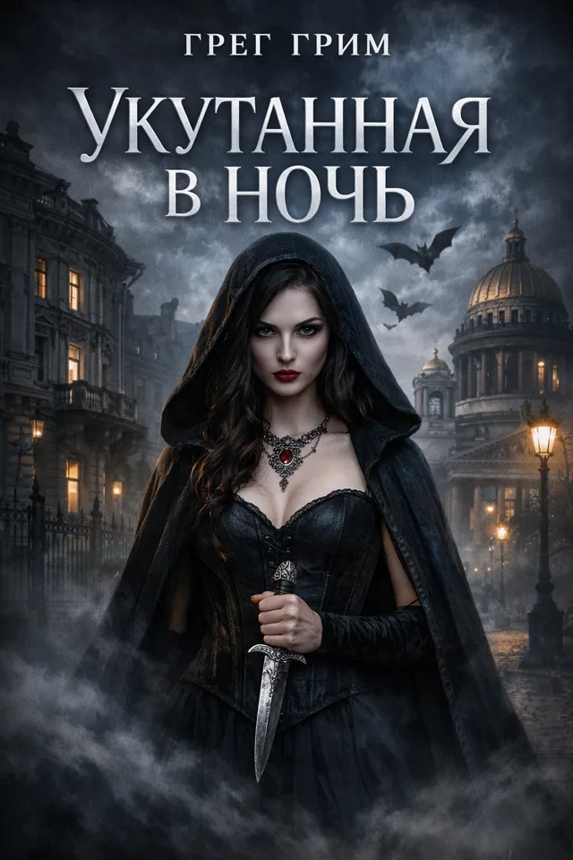

аудионуар · хоррор · дарк-фэнтези
Грег Грим
Истории о цене выбора — и о том, что приходит взыскать её после наступления темноты.
Библиография
Шесть дверей в темноту
Из рукописи
Найдите текст в темноте
// рабочие материалы. не для печати.
Фонарь на углу мигнул дважды и погас — так в этом городе здороваются с плохими новостями. Я стоял под дождём и смотрел на окно третьего этажа, где свет горел всю ночь.
Хозяин квартиры умер во вторник. Выключить лампу было некому — и всё же кто-то только что прошёл за занавеской.
Цена вопроса была проста: подняться и узнать. Платить, как всегда, пришлось не деньгами.
водите по тексту, как фонариком
Досье
Об авторе
Грег Грим пишет на стыке нуара, хоррора и дарк-фэнтези — там, где детектив перестаёт искать преступника и начинает бояться собственной тени.
В его книгах страшное редко выпрыгивает из-за угла. Оно ждёт, пока герой сам сделает шаг — и предъявляет счёт. Главная тема всех историй — цена выбора и цена поступков: что человек готов отдать, когда торговаться уже поздно.
Читатели оценили: пять книг автора держат рейтинг 5,0 на Литрес, три из них озвучены как аудиокниги. Новый роман «Мрак, друг мой» выходит по главам прямо сейчас.
«Меня интересует цена выбора. Монстры — лишь те, кто приходит её взыскать.»
Связь
Написать автору
Отзывы, вопросы, предложения о сотрудничестве — или просто рассказать, на какой странице вы выключили свет.